サトリ攻略 - タリスマン・スキル・チーム | ヒーローウォーズ・アライアンス
- 著者：アレクサンドレ・ドミンゴス。 .
サトリは、敵が得たボーナスエネルギーの一滴まで後悔させるタイプのメイジです。Fox Fireマークは静かに蓄積され、Ravenous Packが発動すると大きな魔法圧力として一気に爆発します。
このガイドでは、ゲーム内データとテストをもとに、サトリのタリスマン、スキル優先度、スキン、アーティファクト、グリフ、カウンター、シナジーを解説します。明確なバトルプランで育成できるようにまとめています。
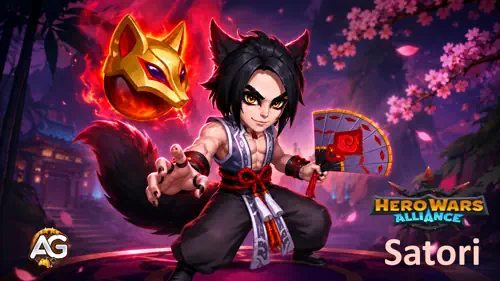
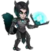
サトリ攻略 目次
- サトリとは？
- メタでの総合評価
- 長所と短所
- タリスマン最大ステータス比較
- タリスマンガイド
- レジェンダリー遺物スキルの強化優先度
- サトリにおすすめのスキン
- アーティファクト強化優先度
- グリフ強化優先度
- サトリ対策
- サトリのシナジー
- サトリのベストチーム
- まとめ
ヒーローウォーズ・アライアンスのサトリとは？
サトリは「神秘の道」に属する前線メイジです。Fox Fireマークを付与し、ボーナスエネルギーを罰し、知力を奪い、長期戦を壊滅的な魔法バーストへ変えることで勝ち筋を作ります。
スキル構成は理解しやすい一方で、相手には非常に厳しい内容です。敵がマークを長く抱えるほど、Ravenous Packの脅威が増します。ボーナスエネルギーを得るチームに対しては、Looming Justiceが9個のFox Fireマークを素早く積み、突然のノックアウトチャンスを作れます。
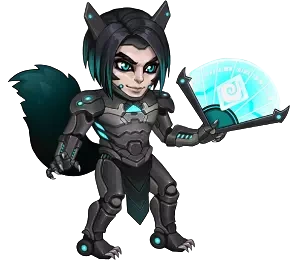
- メインクラス： メイジ
- 配置： 前線
- メインステータス： 知力
- 派閥： 神秘の道
- ソウルストーン入手方法： イベント、英雄の宝箱、ハイウェイマンショップ
- シナジー： バイナ, カスケード, セレステ, アミラ, リアン
- ヒドラTierリスト： B
- ヒーローTierリスト： S+
サトリ最大の個性は、エネルギー獲得へのカウンター性能です。マークを重ね、知力を奪い、正しいタイミングでRavenous Packを発動できるまで守られると、特に危険な存在になります。
サトリ 長所と短所 - ヒーローウォーズ・アライアンス
長所
- Ravenous Packの前にFox Fireマークを積めると、非常に高いバーストを出せます。
- Looming Justiceは、ボーナスエネルギーを得る敵を罰します。
- Centurial Wisdomは知力を奪い、長期戦でサトリをスケールさせます。
- アミラ、セレステ、カスケード、バイナ、リアンとの強い神秘シナジーがあります。
- Cunning Foxにより、マークされた敵から受けるダメージを軽減できます。
短所
- 前線で戦うため、保護が必要です。
- ダメージは、発動時まで敵にマークが残っているかに依存します。
- フル性能を解放するには、レジェンダリー遺物への大きな投資が必要です。
- 対魔法構成やクレンジングが多いチームには苦戦することがあります。
サトリ - タリスマン最大ステータス比較
| ステータス | 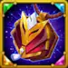 タリスマン_1：狡知 |
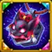 タリスマン_2：慎重 |
|---|---|---|
 知力 知力 | 17,389 | 15,389 |
 素早さ 素早さ | 3,517 | 3,517 |
 力 力 | 4,102 | 4,102 |
 HP HP | 804,079 | 985,579 |
 物理攻撃 物理攻撃 | 36,526 | 34,526 |
 魔法攻撃 魔法攻撃 | 171,755 | 165,755 |
 アーマー アーマー | 37,123.5 | 50,923.5 |
 魔法防御 魔法防御 | 36,931 | 34,931 |
 魔法貫通 魔法貫通 | 79,338 | 59,538 |
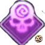 魔法クリティカル率 | 7,808 | 7,808 |
クラッシング | 4,301 | 4,301 |
サトリ タリスマンガイド ヒーローウォーズ・アライアンス
サトリには2つのタリスマンがありますが、戦闘中にボーナスを与えるのは装備中のタリスマンだけです。ほとんどの戦闘では、ダメージスケールと魔法貫通を伸ばせるため、狡知のタリスマンのほうが強力な選択です。
狡知のタリスマン
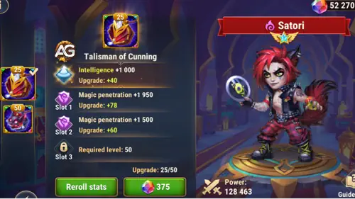
メインスロットは 知力 +2,000 を与えます。知力はサトリのメインステータスなので、これは 魔法攻撃 +6,000、魔法防御 +2,000、物理攻撃 +2,000 を意味します。3つのリロールスロットは 魔法貫通 +19,800 を合計で与えます。
| タリスマン | Main ステータス | リロール合計ボーナス |
|---|---|---|
| 狡知のタリスマン | 知力 +2,000 |
魔法貫通 +19,800 |
慎重のタリスマン
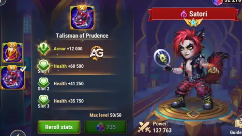
メインスロットは アーマー +12,000 を与え、3つのリロールスロットは HP +181,500 を合計で与えます。サトリが早く倒されすぎる場合、特に物理圧力が強い相手にはこれを選びます。
| タリスマン | Main ステータス | リロール合計ボーナス |
|---|---|---|
| 慎重のタリスマン | アーマー +12,000 |
HP +181,500 |
アレクサンドレのヒント： タリスマン1の狡知のタリスマンは、サトリが中列で守られている場合、または強い前線の後ろにいる場合に多く使います。追加の魔法貫通がFox Fireマークを実ダメージへ変えやすくするためです。タリスマン2の慎重のタリスマンは、サトリが前線で戦わされる場合に多く使います。アーマーとHPにより、マークが爆発するまで生き残る時間を稼げるためです。
サトリ レジェンダリー遺物スキルの強化優先度 - ヒーローウォーズ・アライアンス
サトリの最優先強化は、Fox Fireマークのダメージ、マーク生成、生存力を伸ばし、敵のボーナスエネルギーを危険なミスに変えるものです。
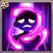
1番目 - Ravenous Pack
ゲーム内説明： ヒーローの通常攻撃は魔法ダメージを与え、敵にFox Fireマークを付与します。スキルが発動すると、敵は付与されている効果1つごとにダメージを受けます。このスキル使用中、サトリはコントロール効果を受けません。
スキル解説： これはサトリのメインバーストスキルです。Fox Fireマーク1つごとに魔法ダメージを与えるため、Spirit Banishment、Looming Justice、Searing Clawsですでにマークを積んでいるほど強力になります。狡知のタリスマンでは、各マークのダメージは 138,229 (70% 魔法攻撃 + 18,000)に到達します。慎重のタリスマンでは、各マークのダメージは 134,029 (70% 魔法攻撃 + 18,000).
タリスマン 1: 狡知のタリスマン
- 計算式1： マーク1つあたりのダメージ： 138,229 (70% 魔法攻撃 + 18,000)
- 魔法攻撃 used: 171,755
タリスマン 2: 慎重のタリスマン
- 計算式1： マーク1つあたりのダメージ： 134,029 (70% 魔法攻撃 + 18,000)
- 魔法攻撃 used: 165,755
スキルアニメーション情報
- 範囲： 590
- アニメーション遅延： 1.35秒
- キーワード： Mark
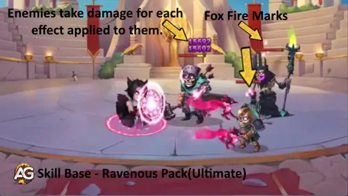
強化優先度： 非常に高い - サトリが付与するFox Fireマークすべての回収手段なので、強化するとメインの勝ち筋が直接強くなります。
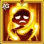
1番目 - Ravenous Pack Enhancement - Legendary Relic Level 10
ゲーム内説明： Ravenous Pack発動時、サトリは自分にかかっているすべての悪影響を解除し、スキル発動中はそれらに免疫を得ます。
スキル解説： この強化は、サトリが最も守られたい瞬間、つまりRavenous Packの発動を保護します。悪影響を解除することで、妨害されずに詠唱を完了し、マークを爆発させやすくなります。
タリスマン 1: 狡知のタリスマン
- 計算式： この強化は、Ravenous Pack発動中にクレンジングと免疫を追加します。
タリスマン 2: 慎重のタリスマン
- 計算式： 追加ダメージの計算式はありません。効果は同じで、装備タリスマンによってサトリの最終ステータスだけが変わります。
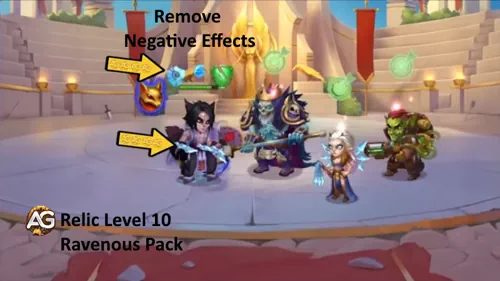
強化優先度： 高い - 新しいダメージ計算式は追加されませんが、サトリで最も重要なスキルをかなり妨害されにくくします。
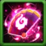
2番目 - Spirit Banishment
ゲーム内説明： サトリがすべての敵を攻撃し、ダメージを与えてFox Fireマークを付与します。味方の神秘ヒーロー1体ごとに追加のマークを付与します。
スキル解説： これはサトリの広範囲マーク準備スキルです。すべての敵にダメージを与え、後でRavenous Packがバーストダメージへ変換するマークの土台を作ります。狡知のタリスマンでは、ヒットは 106,653 (60% 魔法攻撃 + 3,600)に到達します。慎重のタリスマンでは 103,053 (60% 魔法攻撃 + 3,600).
タリスマン 1: 狡知のタリスマン
- 計算式1： ダメージ： 106,653 (60% 魔法攻撃 + 3,600)
- 魔法攻撃 used: 171,755
タリスマン 2: 慎重のタリスマン
- 計算式1： ダメージ： 103,053 (60% 魔法攻撃 + 3,600)
- 魔法攻撃 used: 165,755
スキルアニメーション情報
- 初回クールダウン： 8秒
- クールダウン： 15秒
- アニメーション遅延： 0.5秒
- キーワード： Mark
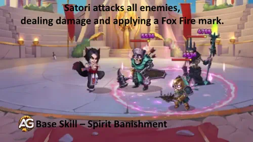
強化優先度： 高い - 敵チーム全体へのサトリのダメージとマーク準備を強化します。
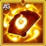
2番目 - Spirit Banishment Enhancement - Legendary Relic Level 20
ゲーム内説明： Spirit Banishmentが追加で1個のマークを付与するようになります。
スキル解説： 追加マーク1個は小さく見えるかもしれませんが、サトリでは重要です。追加マークはすべて、後のRavenous Packの追加ダメージになります。
タリスマン 1: 狡知のタリスマン
- 計算式： 個別のダメージ計算式はありません。レジェンダリー効果はFox Fireマークを1個追加します。
タリスマン 2: 慎重のタリスマン
- 計算式： 個別のダメージ計算式はありません。価値は、後でRavenous Packが消費するマークを1個多く作れる点にあります。
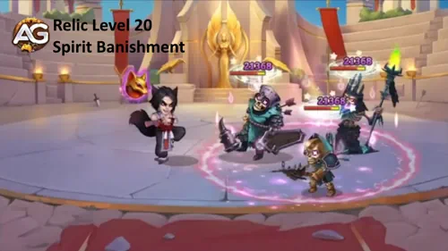
強化優先度： 高い - サトリのバーストダメージのエンジンであるマーク運用を強化します。
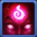
3番目 - Centurial Wisdom
ゲーム内説明： 敵にダメージを与えるたび、その敵から一定量の知力を奪います。奪われた知力は、戦闘終了またはサトリの死亡まで戻りません。この効果は打ち消せません。サトリは敵が持つ以上の知力を奪うことはできません。成功した通常攻撃ごとに、与えたダメージの300%分だけヒーローのHPを回復します。
スキル解説： このパッシブは長期戦でサトリを加速させます。知力吸収は敵の魔法ヒーローを弱体化しつつ、サトリ自身のメインステータスによるスケールも伸ばします。回復量は与ダメージに基づくため、装備タリスマンによる最終ダメージステータスも重要です。
タリスマン 1: 狡知のタリスマン
- 計算式1： 知力 Steal: 600
- 計算式2： 成功した通常攻撃による回復： 与ダメージの300%
タリスマン 2: 慎重のタリスマン
- 計算式1： 知力 Steal: 600
- 計算式2： 成功した通常攻撃による回復： 与ダメージの300%
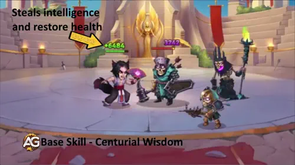
強化優先度： 中〜高 - スケールと耐久に優れますが、通常はサトリのマーク系スキルを先に強化します。
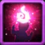
4番目 - Looming Justice
ゲーム内説明： 敵がボーナスエネルギーを得るたび、サトリはその敵に9個のFox Fireマークを付与します。ヒーローが受けたダメージ、通常攻撃の使用、スキルの使用、敵の撃破によって得たエネルギーはボーナスエネルギーとは見なされません。
スキル解説： これはサトリの対エネルギートラップです。敵チームがボーナスエネルギーに依存している場合、サトリは素早く十分なマークを置き、大きなRavenous Packバーストを狙えます。
タリスマン 1: 狡知のタリスマン
- 計算式1： 付与されるFox Fireマーク： 9
タリスマン 2: 慎重のタリスマン
- 計算式1： 付与されるFox Fireマーク： 9
スキルアニメーション情報
- キーワード： Mark
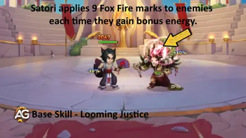
強化優先度： 中〜高 - 価値は敵編成に左右されますが、ボーナスエネルギー編成に対してはサトリの最も怖いツールの一つになります。
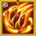
5番目 - Searing Claws - 新レジェンダリースキル レベル1
ゲーム内説明： 17.0秒ごとに、Fox Fireマークを持つすべての敵へ、マークを消費せずに魔法ダメージを与えます。マークを持つ敵がいない場合、各敵に6個のマークを付与します。
スキル解説： マークされた敵に対して17秒ごとのパッシブダメージサイクルを与え、敵チームにまだマークがない場合は、代わりに各敵へ6個のマークを作ります。狡知のタリスマンでは、ヒットは 103,053 (60% 魔法攻撃)に到達します。慎重のタリスマンでは 99,453 (60% 魔法攻撃).
タリスマン 1: 狡知のタリスマン
- 計算式1： ダメージ： 103,053 (60% 魔法攻撃)
- 魔法攻撃 used: 171,755
- 代替効果： マークを持つ敵がいない場合、各敵に6個のFox Fireマークを付与します。
タリスマン 2: 慎重のタリスマン
- 計算式1： ダメージ： 99,453 (60% 魔法攻撃)
- 魔法攻撃 used: 165,755
- 代替効果： マークを持つ敵がいない場合、各敵に6個のFox Fireマークを付与します。
スキルアニメーション情報
- クールダウン： 17秒
- アニメーション遅延： 0.5秒
- キーワード： Mark
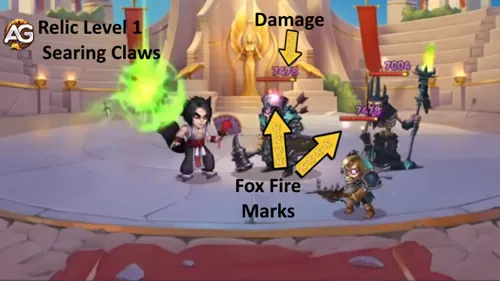
強化優先度： 高い - マークがあると自動ダメージを追加し、敵チームにマークがない場合はマークを再構築できます。そのためDPSとマークの安定性の両方が向上します。
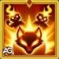
6番目 - Cunning Fox - 新レジェンダリースキル レベル30
ゲーム内説明： Fox Fireマークを4個以上持つ敵は、サトリへ与えるダメージが減少します。
スキル解説： Cunning Foxは、サトリが本来やりたいこと、つまりマークを広げる動きをそのまま報酬に変えます。敵が4個以上のマークを持つと、サトリは大きな防御恩恵を得ます。
タリスマン 1: 狡知のタリスマン
- 計算式1： ダメージ軽減： 50%
- 条件： 敵が4個以上のFox Fireマークを持っている。
タリスマン 2: 慎重のタリスマン
- 計算式1： ダメージ軽減： 50%
- 条件： 敵が4個以上のFox Fireマークを持っている。
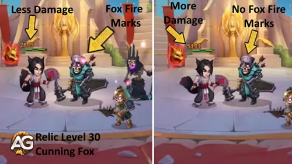
強化優先度： 中〜高 - サトリは前線で戦うため、これは特に強力な生存力強化です。
サトリにおすすめのスキン ヒーローウォーズ・アライアンス
サトリのスキン優先度はシンプルです。魔法貫通と魔法攻撃はバーストを伸ばし、アーマーやHP系の防御は前線で生き残る助けになります。
デフォルトスキン
ステータス: 知力 +1,365。これにより、魔法攻撃 +4,095、魔法防御 +1,365、物理攻撃 +1,365を得ます。
強化優先度： 高い - 知力はサトリのダメージスケールと基本的な生存力を支えます。
サイバネティックスキン
ステータス: アーマー +10,650.
強化優先度： 中 - サトリは前線なので有用ですが、Fox Fireバースト自体は伸びません。
ダークデプススキン
ステータス: 魔法攻撃 +10,650.
強化優先度： 高い - Ravenous PackとSpirit Banishmentはどちらも魔法攻撃でスケールします。
セレスティアルスキン
ステータス: 魔法防御 +10,650.
強化優先度： 中 - メイジ相手には役立ちますが、通常はダメージ系スキンの後になります。
ビーチスキン
ステータス: 魔法貫通 +10,650.
強化優先度： 非常に高い - 魔法貫通は、サトリのマークダメージが敵の防御を突破する助けになります。
マスカレードスキン+
ステータス: 魔法クリティカル率 +5,920。強化版のスキン+は、入手時にステータスボーナスが2倍になります。
強化優先度： 中〜高 - バーストの瞬間火力には強いですが、貫通と魔法攻撃のほうが安定します。
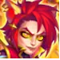
ドーンスキン+
ステータス: 魔法貫通 +21,300。アップグレード版スキン+は取得時にステータスボーナスが2倍になります。
強化优先度： 非常に高い - 敵の防御を突破するための例外的な貫通ブース。際の檄鰻と同榨の最高優先度。
サトリ アーティファクト強化優先度 ヒーローウォーズ・アライアンス
サトリのアーティファクト優先度は、まず魔法圧力、次に貫通、最後に追加スケールと防御価値のための知力を重視します。
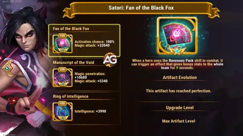
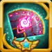
第1アーティファクト：黒狐の扇
効果： チームに魔法攻撃 +32,040を9秒間付与します。発動率：100%。
強化優先度： 非常に高い - サトリのメインダメージステータスを強化し、アルティメットのタイミングで魔法系の味方にも恩恵を与えます。
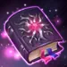
第2アーティファクト：虚無の写本
効果： 魔法貫通 +10,680、魔法攻撃 +5,340。
強化優先度： 高い - サトリが防御を抜いて魔法ダメージを通す力を直接高めます。

第3アーティファクト：知力の指輪
効果： 知力 +3,990。これにより、魔法攻撃 +11,970、魔法防御 +3,990、物理攻撃 +3,990を得ます。
強化優先度： 高い - 優秀ですが、武器と本のほうが通常は戦闘への即効性が高いです。
サトリ グリフ強化優先度
ゲーム内の表示順はそのまま意識しつつ、投資はサトリのFox Fireダメージと生存力を安定させるステータスから進めます。
1番目のグリフ - 魔法攻撃
レベル80ステータス: 魔法攻撃 +12,850.
強化優先度： 非常に高い - Ravenous PackとSpirit Banishmentのダメージを上げます。
2番目のグリフ - HP
レベル80ステータス: HP +122,800.
強化優先度： 中〜高 - サトリはマークが意味を持つタイミングまで生き残るため、十分なHPが必要です。
3番目のグリフ - アーマー
レベル80ステータス: アーマー +12,850.
強化優先度： 中 - 前線メイジとして防御価値が高く、特に物理チーム相手に有効です。
4番目のグリフ - 魔法貫通
レベル80ステータス: 魔法貫通 +12,850.
強化優先度： 非常に高い - サトリの主なダメージは魔法なので、最高クラスの攻撃グリフです。
5番目のグリフ - 知力
レベル80ステータス: 知力 +2,110。これにより、魔法攻撃 +6,330、魔法防御 +2,110、物理攻撃 +2,110を得ます。
強化優先度： 高い - 知力はサトリのダメージと魔法防御を同時に伸ばします。
サトリ対策 ヒーローウォーズ・アライアンス
セレステ
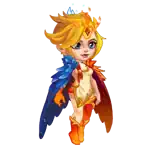
セレステは回復に圧力をかけ、対魔法コントロールのプランを支援できます。これにより、サトリがマークを爆発させるまで生き残りにくくなります。
コーネリウス

コーネリウスは、サトリが知力ヒーローであるため危険です。サトリが最も知力の高い対象になると、コーネリウスに大きく罰されます。
アイリスはサトリのFox Fireマークに対抗し、サトリを罰できます。そのため、サトリが本来の役割に集中しにくくなります。
ジュリアス、アイザック、ジャッジの組み合わせは、サトリのFoxマークに対する自然なシールドカウンターです。味方のシールドが破壊されたとき、ジュリアスはマークを除去できます。
フォボスは魔法攻撃が最も高い敵を麻痺させられるため、サトリがFox Fireマークを付与しにくくなります。
ルーファス

ルーファスは魔法ダメージ構成に強く、サトリのFox Fireバーストに対する最も直接的な防御回答の一つです。
ネブラ
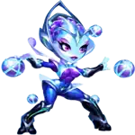
ネブラはパッシブスキルEquilibriumにより、近くの味方2体からFox Fireマークを除去できます。
サトリのシナジー in ヒーローウォーズ・アライアンス
アミラは神秘チームに合い、強い魔法圧力を追加します。敵が複数の魔法脅威に対応している間、サトリが罰を与えやすくなります。
バイナは回復とエネルギー獲得で支援し、サトリが長くコントロールされた戦闘をしやすくするため、トップシナジーとして挙げられます。
カスケードは神秘シナジーを追加し、圧力を重ねやすくします。敵はサトリだけに集中しにくくなります。
セレステは回復と回復妨害の支援を持ち、サトリがFox Fireマークを積んでバーストへ変換する時間を増やします。
リアンはコントロールと神秘シナジーを追加し、サトリがRavenous Packへ向かって準備する間、敵のテンポを遅らせます。
サトリのベストチーム in 2026 - ヒーローウォーズ・アライアンス
チーム1の分析：
このチームは、神秘スタイルのコントロールとバーストを全面的に使う構成です。リアンとポラリスは敵のテンポを遅らせ、アミラは魔法圧力を追加し、バイナは生存力を高めます。この構成ではサトリが危険に近い位置へ置かれやすいため、タリスマン2を使います。目標は、サトリのFox Fireマークが爆発するまで敵を十分にコントロールすることです。
| サトリ - 2026年ベストチーム #1 | ||||
|---|---|---|---|---|
|
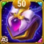 タリスマン 2 |
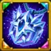 タリスマン 1 |
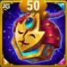 タリスマン 1 |
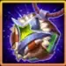 タリスマン 2 |
タリスマン 2 |
| リアン |
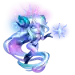 ポラリス |
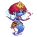 アミラ |
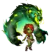 バイナ |
サトリ |
チーム2の分析：
このバージョンでは、アスタロスを前線の軸として加え、クセシャを2つ目の魔法ダメージ脅威として採用します。リアンとアミラはコントロールと神秘の圧力を維持し、サトリは前線圧力の中でマークを爆発させるまで生き残る必要があるため、アーマーとHPを得られるタリスマン2を使います。
サトリ Guide まとめ
サトリは高い魔法圧力を持つダメージディーラーで、敵がボーナスエネルギーのトリガーを与えると恐ろしい存在になります。最適ビルドは、魔法貫通、魔法攻撃、そしてFox Fireマークが回収されるまで生き残るための十分な耐久に集中します。
ほとんどの戦闘では、狡知のタリスマン、ビーチスキン、魔法攻撃と魔法貫通のグリフ、そしてRavenous Packの強化を優先します。早く倒れすぎる場合は、慎重のタリスマンへ切り替え、最大ダメージを追う前にHPとアーマーへ多めに投資しましょう。
注目ガイドで新スキルをチェック！


あなたの意見を聞かせてください！
このサトリ攻略は役に立ちましたか？わかりにくい点や変更を提案したい部分はありますか？アレクサンドレ・ゲームズのブログページのコメント欄にぜひ参加してください。意見、疑問、提案を気軽に共有できます。
下のボタンをクリックして始めましょう：